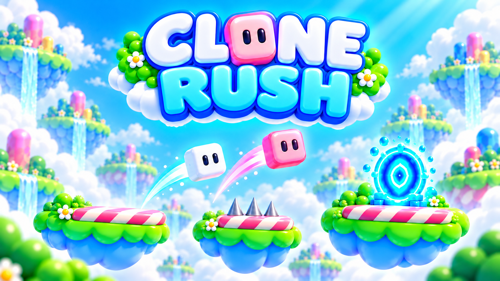

Clone Rush · report creativo
Un gioco di Samuele Riccardi.
Una mossa.
Più cloni.
Copertine e video per presentare Clone Rush: un solo set di comandi guida più cloni.
Immagini finali
Copertine Pronte per il listing
Colori Candy Sky, due cloni e un percorso leggibile anche in miniatura. Le immagini contengono solo il titolo del gioco.



Video pubblicitario
Un solo movimento: zoom indietro
La copertina resta a pieno schermo mentre la camera si allontana lentamente. Sette secondi, senza bande, tagli né audio.
Impiego previsto
Dove useremo il materiale
CrazyGames · Basic Launch
Copertine e anteprime tecniche con gameplay per il listing. Scoperta organica; annunci e monetizzazione disattivati in questa fase.
GamePix
Stesse copertine e icona per una presentazione coerente. L'integrazione pubblicitaria resta disattivata.
Campagna futura: i video zoom sono creatività per canali esterni ai portali. Un messaggio breve come “Two clones. One move.” può accompagnarli. Le copertine per i portali mantengono solo il titolo.